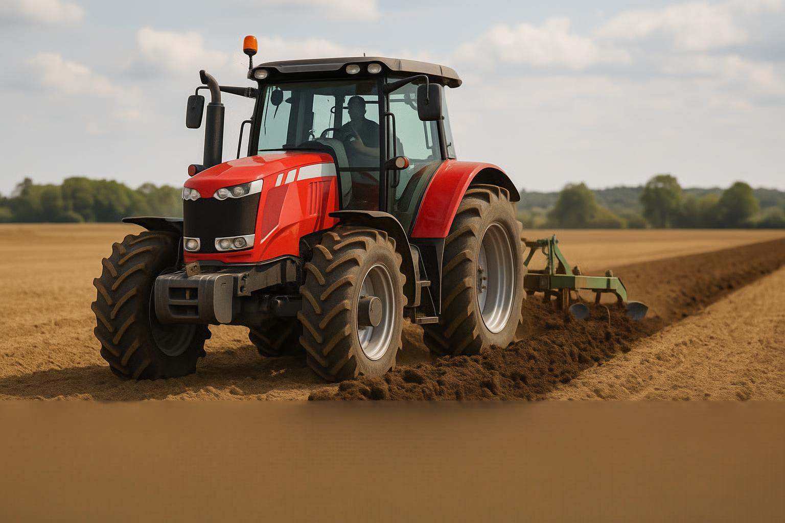
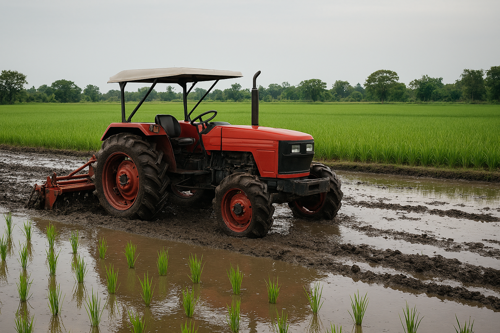
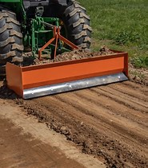

Seedbed Preparation
Preparing the field to fine tilth
The seedbed is prepared to create a soft, even surface for transplanting. Ahero farmers use ploughing, puddling and leveling to set the crop up for success.
Steps for seedbed preparation
- Drain previous crop residues.
- Plough field.
- Flood the field.
- Harrow the soil.
- Puddle soil.
- Level field.
Farm machinery
Tools used to build the seedbed
Machinery speeds up land preparation and creates a better surface for transplanting rice seedlings.

Tractor
Provides power for ploughing and pulling field equipment.
Advantage: faster field preparation.

Rotavator
Creates fine tilth by grinding and mixing soil particles.
Advantage: ideal for smooth, even seedbeds.

Leveller
Smooths the field surface for uniform water distribution and transplanting.
Advantage: reduces potholes and improves crop emergence.
Field videos
Ploughing, harrowing and leveling
Modern machines and careful fieldwork prepare the rice seedbed in Ahero.

Watch the sequence of ploughing, harrowing and leveling that creates the ideal rice seedbed.